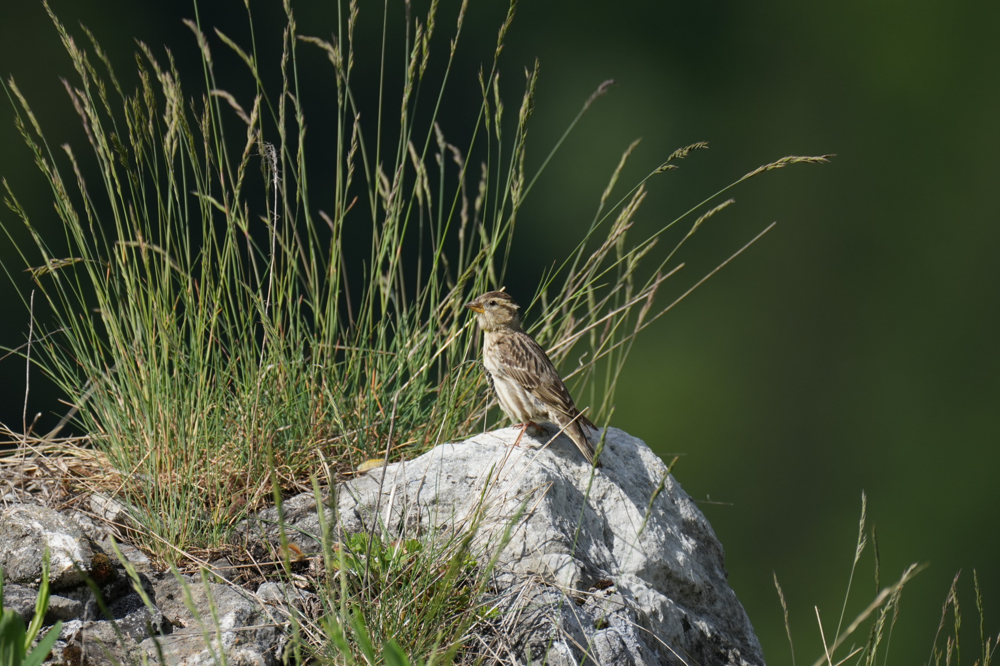
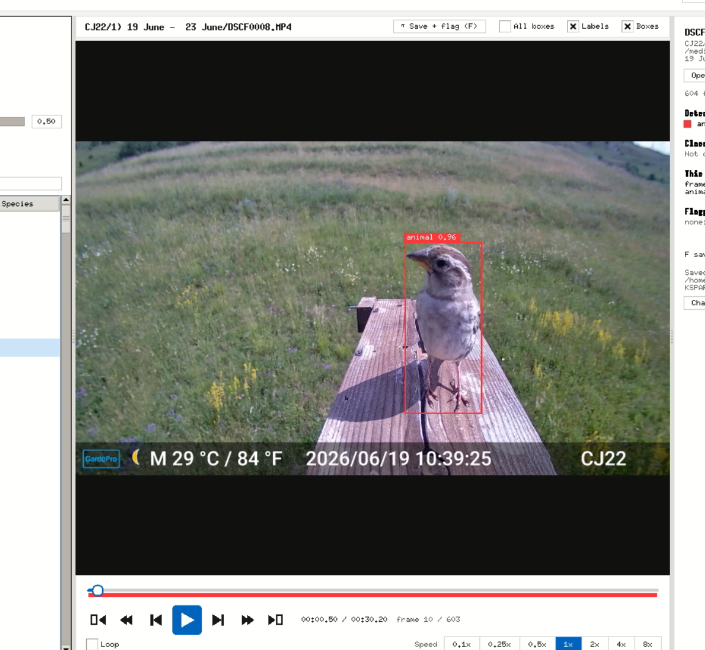
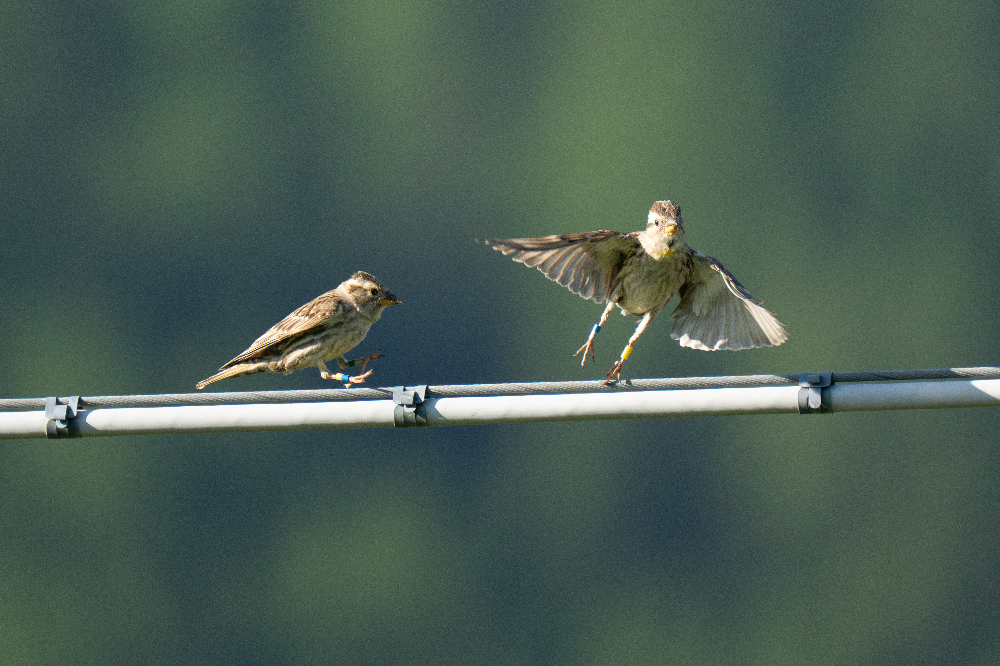

Rock Sparrow
Petronia petronia Passera lagia
Italian Alps, province of Turin
I study a Rock Sparrow population breeding in the Italian Alps, already known for mating tactics that differ from those found across the rest of the species' European range. My work explores how the lengthening of the breeding season driven by climate warming has altered survival, mating strategies and other behavioural traits.
Ongoing projects and papers

In preparation
Identifying rare mating behaviours with machine learning
We're implementing an automated screening pipeline based on YOLO 26m to screen camera trap videos for rare mating behaviours. In collaboration with Giacomo Bovo Luisetto.

In preparation
Climate Warming effect on Sexual Selection
We're applying various sexual selection metrics on 23 years of reproductive data to quantify climate change impact on sexual selection.Recently presented at ISBE 2026.